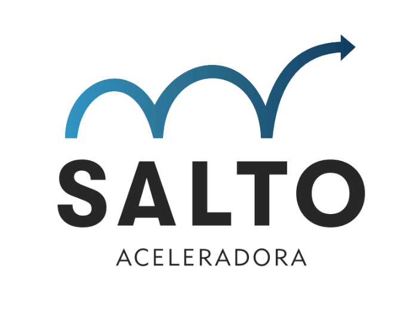

Seja Bem-Vinda Daiane!
Preparei um material para que você possa acessar de acordo com a sua agenda conforme a sua demanda. Nestas aulas você aprenderá como utilizar ChatGpt, para tirar o máximo de eficiência da Inteligência Artificial Também há um video sobre como fazer um Livro Caixa de forma simples e rápida. Por fim, um vídeo explicativo sobre como fazer um Planejamento Estratégico com uma ferramenta simples o Canvas
Vídeo 1: Como Otimizar o ChatGPT:
